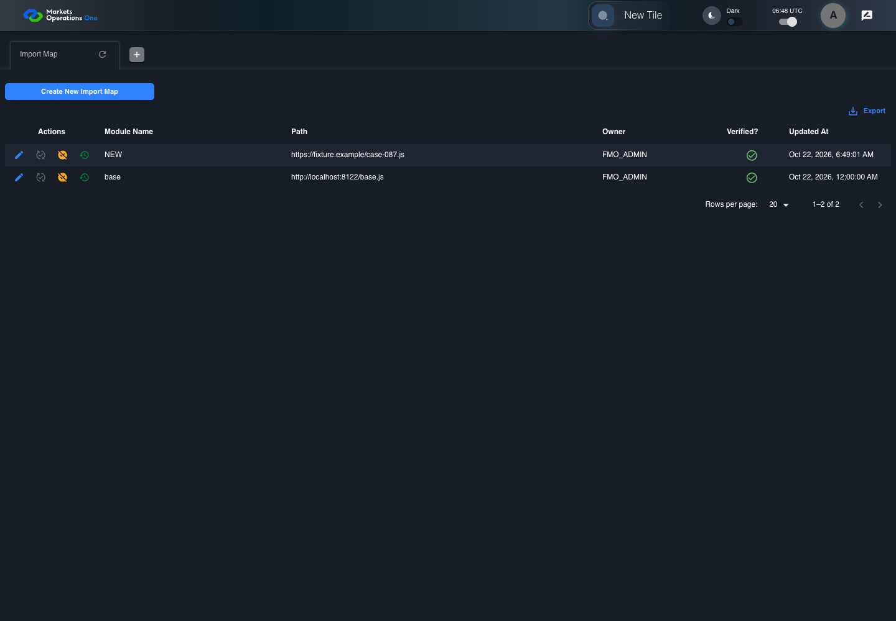

BFF-ADM-087 current BFF administration through actual UI
FAIL · application/run-072/bff-adm-087-current-bff-administration-through-actual-ui-f5997db1a4d9-attempt-1 · ACTUAL_APPLICATION_LOCAL_SERVICES
Actual current React and exact-current BFF admin controllers/services/JPA with actual migration DDL in disposable PostgreSQL. Controlled OUD/EMS2 identities and local Spring bootstrap. Fixture SQL seeds/mutates isolated records; service errors are actual database errors. Undefined agreed messages remain unresolved acceptance.
2026-10-22T06:48:58.036Z to 2026-10-22T06:49:07.353Z
Assertions and result · Artifact manifest · Exact run inputs and source hashes
Result SHA-256:805715bd76a064052114ff2e168ed4757e910dd60fd0baff90f39aee506fb387Retained failure details
[
{
"message": "Error: \u001b[2mexpect(\u001b[22m\u001b[31mlocator\u001b[39m\u001b[2m).\u001b[22mtoBeVisible\u001b[2m(\u001b[22m\u001b[2m)\u001b[22m failed\n\nLocator: locator('.MuiAlert-root').filter({ has: locator('.MuiAlert-message') })\nExpected: visible\nTimeout: 5000ms\nError: element(s) not found\n\nCall log:\n\u001b[2m - Expect \"toBeVisible\" locator('.MuiAlert-root').filter({ has: locator('.MuiAlert-message') }) with timeout 5000ms\u001b[22m\n\u001b[2m - waiting for locator('.MuiAlert-root').filter({ has: locator('.MuiAlert-message') })\u001b[22m\n",
"stack": "Error: \u001b[2mexpect(\u001b[22m\u001b[31mlocator\u001b[39m\u001b[2m).\u001b[22mtoBeVisible\u001b[2m(\u001b[22m\u001b[2m)\u001b[22m failed\n\nLocator: locator('.MuiAlert-root').filter({ has: locator('.MuiAlert-message') })\nExpected: visible\nTimeout: 5000ms\nError: element(s) not found\n\nCall log:\n\u001b[2m - Expect \"toBeVisible\" locator('.MuiAlert-root').filter({ has: locator('.MuiAlert-message') }) with timeout 5000ms\u001b[22m\n\u001b[2m - waiting for locator('.MuiAlert-root').filter({ has: locator('.MuiAlert-message') })\u001b[22m\n\n at BffAdminApp.errorAlert (/Users/lushevol/code/github/ratan-release-impact/workbench/e2e/support/bff-admin-app.ts:166:169)\n at /Users/lushevol/code/github/ratan-release-impact/workbench/e2e/audit-specs/bff-admin.spec.ts:49:166\n at AuditCapture.step (/Users/lushevol/code/github/ratan-release-impact/workbench/e2e/support/audit-fixture.ts:94:21)\n at /Users/lushevol/code/github/ratan-release-impact/workbench/e2e/audit-specs/bff-admin.spec.ts:18:27",
"location": {
"file": "/Users/lushevol/code/github/ratan-release-impact/workbench/e2e/support/bff-admin-app.ts",
"column": 169,
"line": 166
},
"snippet": "\u001b[90m at \u001b[39m../support/bff-admin-app.ts:166\n\n 164 | }\n 165 | async assertUnchanged():Promise<void>{expect(await this.snapshot()).toEqual(this.expectedPersisted);expect(await this.gridSnapshot()).toEqual(this.initialGrid);}\n> 166 | async errorAlert(exact?:string):Promise<void>{const alert=this.page.locator('.MuiAlert-root').filter({has:this.page.locator('.MuiAlert-message')});await expect(alert).toBeVisible();await expect(alert).toHaveClass(/MuiAlert-standardError|MuiAlert-filledError|MuiAlert-outlinedError/);if(exact)await expect(alert.locator('.MuiAlert-message')).toHaveText(exact);else {const mutation=[...this.requests].reverse().find(request=>['create','update','audit'].includes(request.operation));expect(mutation?.status).toBeGreaterThanOrEqual(400);await expect(alert.locator('.MuiAlert-message')).not.toHaveText('');await this.audit.record('undefined-message-contract',{canonical:'Agreed message is unavailable. Only real error response and visible nonempty error are characterized.',actual:await alert.innerText()});}}\n | ^\n 167 | async cell(name:string,id:string){return this.ui.reveal(adminFields[name]??name,id);}\n 168 | }\n 169 |"
}
]Machine observations
- actual-identity-projection.json
4e54793a1c6a8078298c3d14af87148fa76faa8c018369f4f0d2ebc1f3f5d275 - baseline-inputs.json
191b6bd76337a11ba58803cf258e1f4b2980fd632fa56b27b77681a63c11b753 - bff-boundary.json
c84968d343bc6c8ccdee49264eb31df894ee27c6c8c2455439b4267c2886a78b - committed-ui-submission-comparisons.json
36b769663e6ded1125d36db59e4c0b9bc5e29c0777d17c7a36b7f1fe4d32e85e - concurrent-admin-a-maker.json
e5c1e3f6e1c7422f1eb16c969500d4d4ae26d0c4dcdf8f67528c4ee3bdb7dc45 - fixture-step-4.json
0f6c1f95c2652d1dcd1fb6c21a9a325b0ec6b8004450e24b4d27cccd57bc912c - fixture-step-5.json
c30124a1d57a07b190b1d29b75e1289473b422b818fa7d8cf8b5b1d5d9c8e647 - initial-persisted-records.json
ffc80b704306c9cf5203f4b0cf932579e07c66b3f0f0e7482ed1efc842d4a508 - persisted-after-submit.json
e7e3d6c61ab9ff41f03442f4e77206575107c8c22831098a4aa0830768fd7926 - rejection-or-policy-observation.json
1862a3024d1a634d43a19eff1630940d8b74569ac801e98e1bfa051b773bcd34 - ui-origin-bff-requests.json
9a28c93cb3a274bb895386a252eca324f93eed18e93afad21ccd5a3dcb79ce33
Screenshot capture: CAPTURED. Named frames: 13.
Step screenshot evidence: INCOMPLETE. 12/14 canonical steps have execution screenshots.
Step 13 has no screenshot from an executed step. Step 14 has no screenshot from an executed step.
Canonical step timeline
Given Admin B uses subject "admin-b" with role "FMO_ADMIN" in an isolated authenticated browser
Execution: PASSED.1. step-01 Visible state after step 1: Given Admin B uses subject "admin-b" with role "FMO_ADMIN" in an isolated authenticated browser
2026-10-22T06:49:00.280Z · 1440×1000
Step: /Users/lushevol/code/github/ratan-release-impact/workbench/tasks/ui-test-coverage-20261022/test-cases.md:18383
SHA-256:fdf3c3c7990f570c3d259de705864f9f89edf0e933b1f0dc023bc08ab7e6910cAnd the controlled Import Map fixture records the initial grid rows and persisted values
Execution: PASSED.
2. step-02 Visible state after step 2: And the controlled Import Map fixture records the initial grid rows and persisted values
2026-10-22T06:49:00.513Z · 1440×1000
Step: /Users/lushevol/code/github/ratan-release-impact/workbench/tasks/ui-test-coverage-20261022/test-cases.md:18384
SHA-256:fdf3c3c7990f570c3d259de705864f9f89edf0e933b1f0dc023bc08ab7e6910cAnd the Import Map grid has record "101" owned by "FMO_ADMIN"
Execution: PASSED.
3. step-03 Visible state after step 3: And the Import Map grid has record "101" owned by "FMO_ADMIN"
2026-10-22T06:49:00.642Z · 1440×1000
Step: /Users/lushevol/code/github/ratan-release-impact/workbench/tasks/ui-test-coverage-20261022/test-cases.md:18385
SHA-256:fdf3c3c7990f570c3d259de705864f9f89edf0e933b1f0dc023bc08ab7e6910cAnd the baseline fixture data defines "Module Name" as "container-087"
Execution: PASSED.
4. step-04 Visible state after step 4: And the baseline fixture data defines "Module Name" as "container-087"
2026-10-22T06:49:00.803Z · 1440×1000
Step: /Users/lushevol/code/github/ratan-release-impact/workbench/tasks/ui-test-coverage-20261022/test-cases.md:18386
SHA-256:fdf3c3c7990f570c3d259de705864f9f89edf0e933b1f0dc023bc08ab7e6910cAnd the baseline fixture data defines "Path" as "https://fixture.example/case-087.js"
Execution: PASSED.
5. step-05 Visible state after step 5: And the baseline fixture data defines "Path" as "https://fixture.example/case-087.js"
2026-10-22T06:49:00.923Z · 1440×1000
Step: /Users/lushevol/code/github/ratan-release-impact/workbench/tasks/ui-test-coverage-20261022/test-cases.md:18387
SHA-256:fdf3c3c7990f570c3d259de705864f9f89edf0e933b1f0dc023bc08ab7e6910cAnd Import Map record "101" is inactive when this browser loads its grid
Execution: PASSED.
6. step-06 Visible state after step 6: And Import Map record "101" is inactive when this browser loads its grid
2026-10-22T06:49:01.014Z · 1440×1000
Step: /Users/lushevol/code/github/ratan-release-impact/workbench/tasks/ui-test-coverage-20261022/test-cases.md:18388
SHA-256:fdf3c3c7990f570c3d259de705864f9f89edf0e933b1f0dc023bc08ab7e6910cAnd its stored "updatedBy" value is "admin-a"
Execution: PASSED.
7. step-07 Visible state after step 7: And its stored "updatedBy" value is "admin-a"
2026-10-22T06:49:01.095Z · 1440×1000
Step: /Users/lushevol/code/github/ratan-release-impact/workbench/tasks/ui-test-coverage-20261022/test-cases.md:18389
SHA-256:fdf3c3c7990f570c3d259de705864f9f89edf0e933b1f0dc023bc08ab7e6910cWhen Admin B clicks the button labeled "Verify" in the Import Map grid row with "Record Id" "101"
Execution: PASSED.8. step-08 Visible state after step 8: When Admin B clicks the button labeled "Verify" in the Import Map grid row with "Record Id" "101"
2026-10-22T06:49:01.451Z · 1440×1000
Step: /Users/lushevol/code/github/ratan-release-impact/workbench/tasks/ui-test-coverage-20261022/test-cases.md:18390
SHA-256:cb4010cdfa8a86c76238b2fd0facdd8dcc1d41da044b3fdf1adcab926fba608bThen the dialog titled "verify ID: 101" is visible on the Import Map administration page
Execution: PASSED.9. step-09 Visible state after step 9: Then the dialog titled "verify ID: 101" is visible on the Import Map administration page
2026-10-22T06:49:01.540Z · 1440×1000
Step: /Users/lushevol/code/github/ratan-release-impact/workbench/tasks/ui-test-coverage-20261022/test-cases.md:18391
SHA-256:06823503925d2a9c76e7a6e53f8e67c398dcfa247bc379be67b264bf3e838a6fWhen Admin A completes a controlled maker update after this verification dialog loads
Execution: PASSED.
10. step-10 Visible state after step 10: When Admin A completes a controlled maker update after this verification dialog loads
2026-10-22T06:49:01.673Z · 1440×1000
Step: /Users/lushevol/code/github/ratan-release-impact/workbench/tasks/ui-test-coverage-20261022/test-cases.md:18392
SHA-256:06823503925d2a9c76e7a6e53f8e67c398dcfa247bc379be67b264bf3e838a6fAnd Admin B clicks the button labeled "Verified" in dialog "verify ID: 101"
Execution: PASSED.
11. step-11 Visible state after step 11: And Admin B clicks the button labeled "Verified" in dialog "verify ID: 101"
2026-10-22T06:49:01.944Z · 1440×1000
Step: /Users/lushevol/code/github/ratan-release-impact/workbench/tasks/ui-test-coverage-20261022/test-cases.md:18393
SHA-256:8d0a57c8e8ba5210d6089a4561555e007bb5c1493c977671848d91842085f019Then the alert with severity "error" in the portal snackbar displays the agreed message for a stale-verification error
Execution: FAILED.
12. step-12-failure Visible state when step 12 failed. Later steps did not execute.
2026-10-22T06:49:06.996Z · 1440×1000
Step: /Users/lushevol/code/github/ratan-release-impact/workbench/tasks/ui-test-coverage-20261022/test-cases.md:18394
SHA-256:8d0a57c8e8ba5210d6089a4561555e007bb5c1493c977671848d91842085f019And in the Import Map data grid with column "Record Id", the "Verified?" cell for Import Map record "101" has status tooltip "Unverified or Deactivated" on the Import Map administration page
Execution: NOT_EXECUTED.No screenshot is recorded for this step. No executed state is claimed.
And the persisted-record readback for record "101" has "active" equal to false
Execution: NOT_EXECUTED.No screenshot is recorded for this step. No executed state is claimed.
Additional named frames

The visible state when the test failed.
2026-10-22T06:49:07.069Z · 1440×1000Step: Test source: /Users/lushevol/code/github/ratan-release-impact/workbench/e2e/audit-specs/bff-admin.spec.ts:11
SHA-256:
8d0a57c8e8ba5210d6089a4561555e007bb5c1493c977671848d91842085f019Screenshots establish visible state only. Assertions and traces support functional claims.